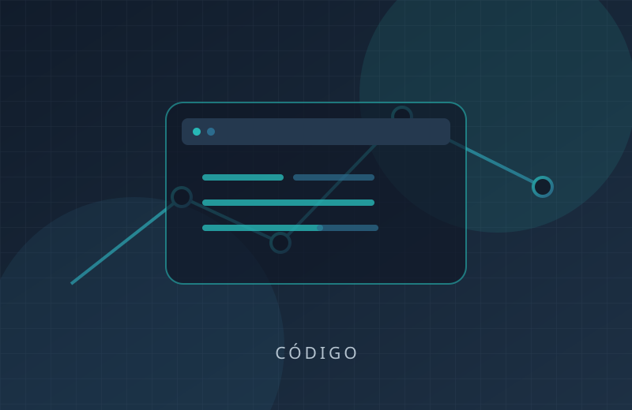
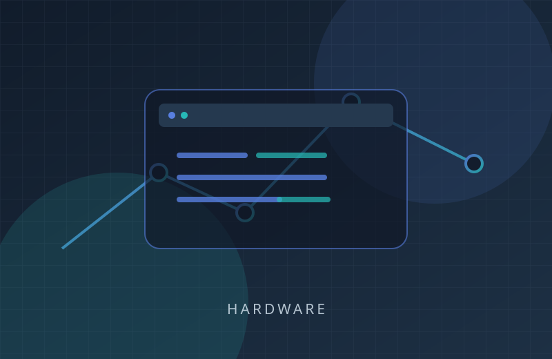
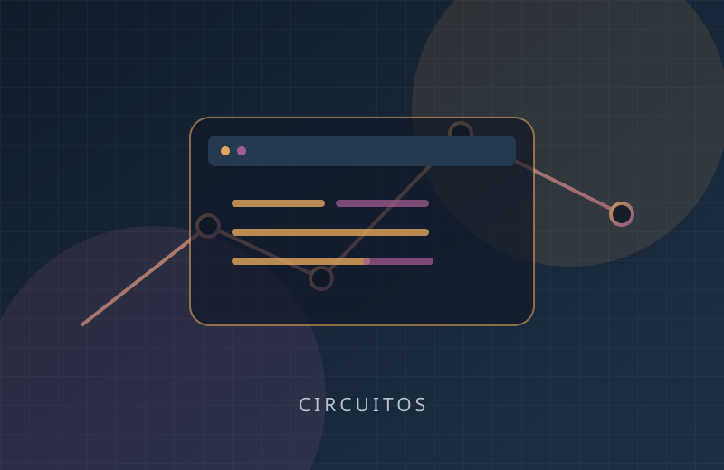
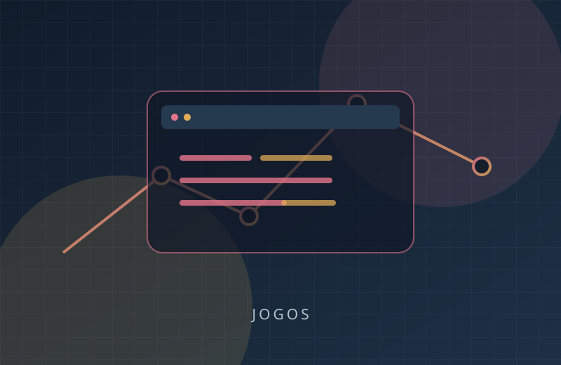
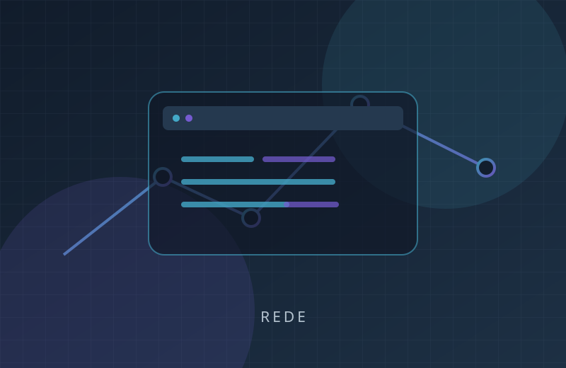
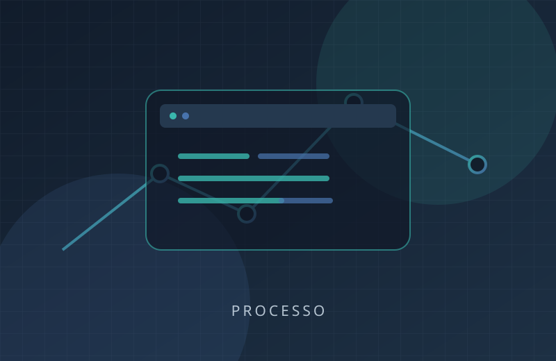
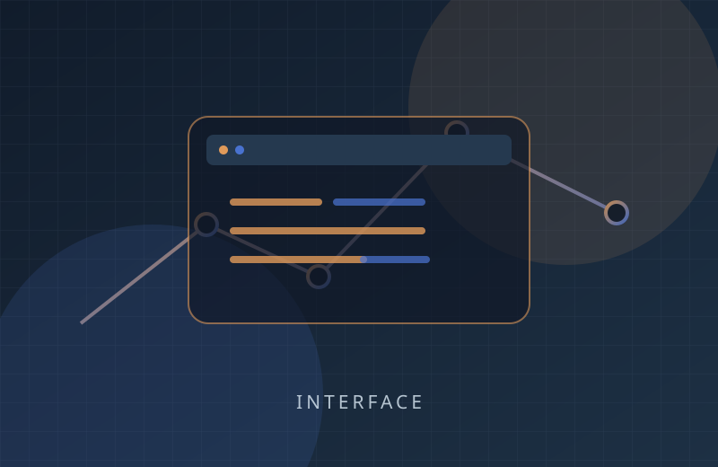

Coleção visual / estudos
Galeria.
Uma coleção de ilustrações locais para representar temas de tecnologia e cultura digital.







As ilustrações são SVGs vetoriais originais e funcionam como placeholders visuais. Para uma galeria fotográfica pessoal, troque os arquivos e revise os textos alternativos e as atribuições.